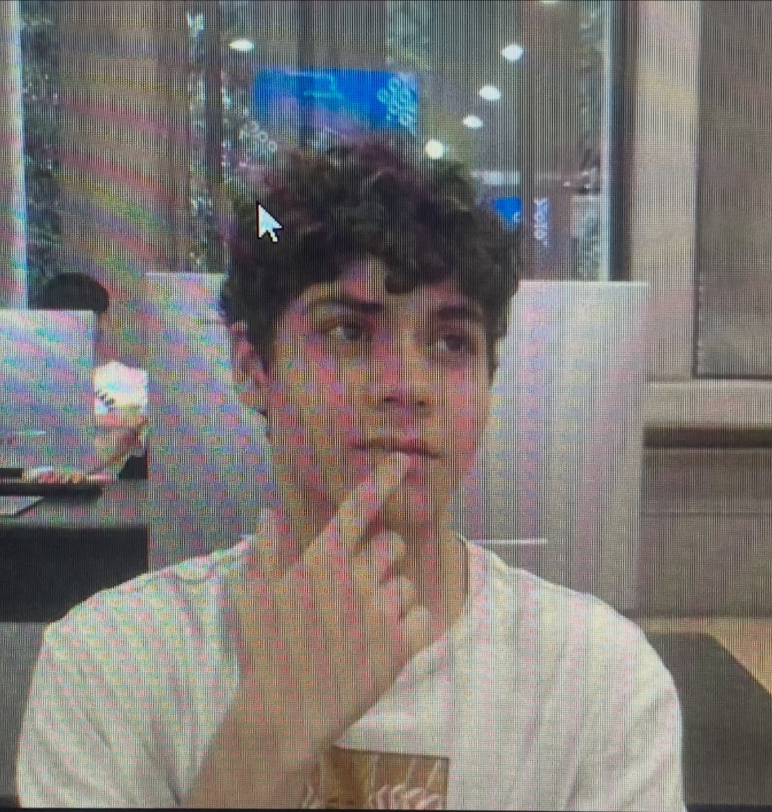
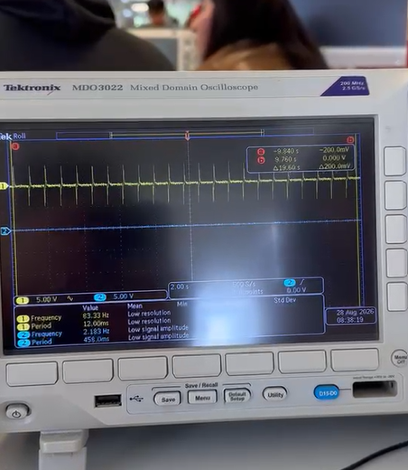
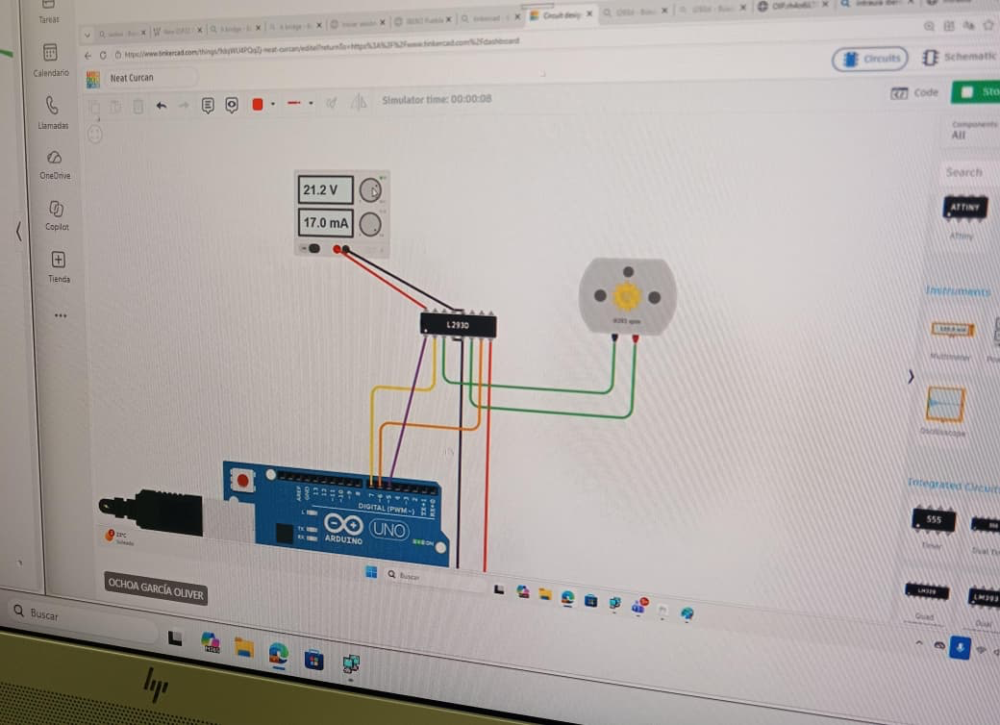
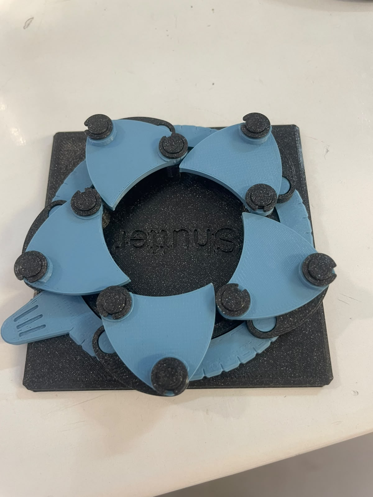
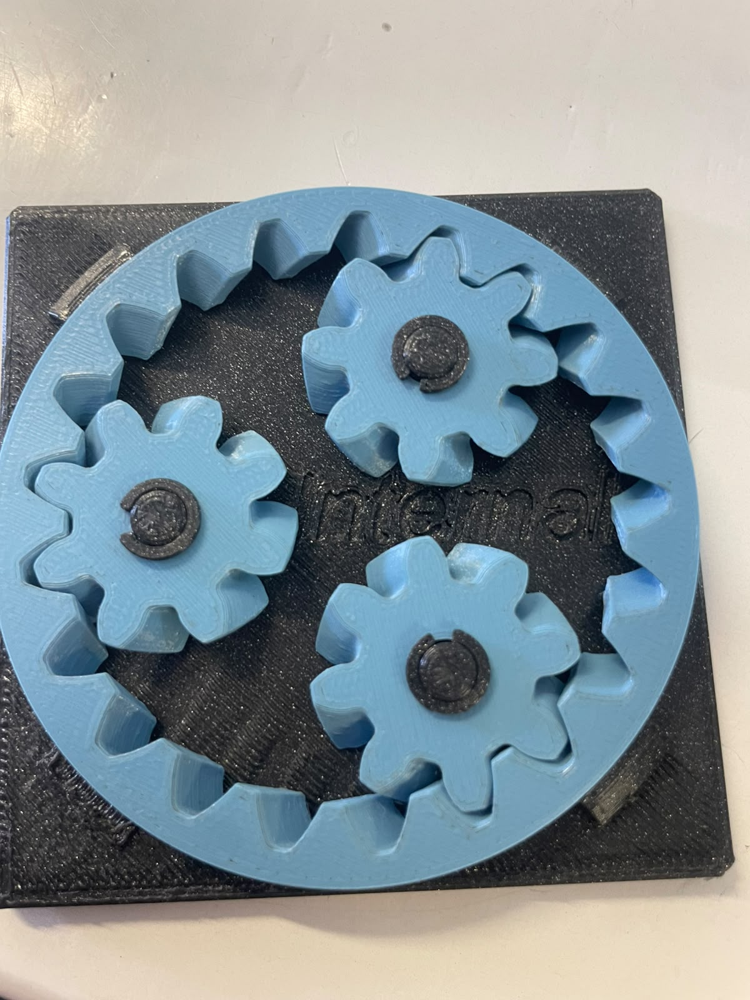

Portafolio Mecatrónica
Hola, soy Eduardo Gutierrez. Me metí a mecatrónica porque se me hace una carrera muy entretenida debido a todo el trabajo manual que conlleva y la mezcla que tiene entre programación, electrónica, trabajos en madera, corte láser e impresión 3D.

Esta pagian web la cree desde visual estudio con una conexion directa de GitHub, al crear un nuevo repertorio usar ese link y pegarlo aqui, use este grupo de comandos diferentesPrograma 1
En este programa logramos hacer que un LED parpadee a cierta velocidad aumentando el delay entre acción y acción.
Que elementos utilise en esta practica?
- Item A
- Subitem A.1
- Subitem A.2
- temporisador 555
- Capacitor electrolítico de 33 μF
- Capacitor electrolitico de 10 μF
- Capacitor cerámico de 10 nF
- Resistencia 1KΩ
- Resistencia 15KΩ
- Resistencia 220 Ω
- Led azul
- Cables de puente
- Protoboard
En esta practica logre aprender los basicos de la electronica el funcionamiento de microchips pricipalmente t como usar sus entradas y salidas y como varian segun cada uno, aqui se puede ver la protoboard armada y el funcionamiento de la misma
Aqui se puede observar como se ve el led parpadeante en un osiloscopio

Programa 2
En esta práctica empezamos el uso de los Arduinos con un código básico que marca el encendido o apagado mediante el uso de un push button junto con la conexion de el bluetooth mediante el celular que elementos utilise?
- ESP32
- Protoboard
- 2 LEDs azules
- 2 resistencias de 220
- Botón pulsador
- Cables de puente
- Cable USB
En la primera parte de esta practica usamos el arduino para proframas un boton simple de encendido y aoagado en el siguinete video podemos ver su funcionamiento
Durante esta misma práctica, con el uso del Arduino y una aplicación de celular, logramos enlazar los aparatos para permitir que una acción pudiera ser transferida del celular al Arduino:
Aquí se puede observar el código que fue usado:
#include <BTAddress.h>
#include <BTAdvertisedDevice.h>
#include <BTScan.h>
#include <BluetoothSerial.h>
BluetoothSerial Mi_tel;
void setup() {
Mi_tel.begin("Edu");
Mi_tel.setTimeout(20);
Serial.begin(9600);
pinMode(32, OUTPUT);
}
void loop() {
if(Mi_tel.available()){
String mensaje = Mi_tel.readStringUntil('\n');
mensaje.trim();
if(mensaje == "OFF"){
digitalWrite(32,1);
}
if(mensaje == "ON"){
digitalWrite(32,0);
}
}
}
programa 3
en esta practica aprendimos a usar tinkercad y vimos las bases de el controlamiento de motores basicos y servo motores hicimos dos practicas la primera la mas basica fue hacer que un motor cambiara de direccion su rotacion, tambien aprendimos un nuevo tipo de microcontrolador el puente h el cua es el responsable de poder invertir las direcciones de los motores.

en el segundo sistema hicimo s que el arduino lograra cambiar la direccion de 3 motores dos normales y un cervo motor, la diferencia entre el servomotor y el normal es que tiene una mayor exactitud y precision a la hora de marcarle pautas este fue el codigo que utilisamos
este fue el codigo que utilisamos
#include <Servo.h>
Servo motor;
void adelante(){
digitalWrite(6, HIGH);
digitalWrite(7, LOW);
digitalWrite(2, HIGH);
digitalWrite(3, LOW);
}
void atras (){
digitalWrite(7, HIGH);
digitalWrite(6, LOW);
digitalWrite(3, HIGH);
digitalWrite(2, LOW);
}
void der (){
digitalWrite(6, HIGH);
digitalWrite(7, LOW);
digitalWrite(3, HIGH);
digitalWrite(2, LOW);
}
void izq (){
digitalWrite(7, HIGH);
digitalWrite(6, LOW);
digitalWrite(2, HIGH);
digitalWrite(3, LOW);
}
void setup()
{
//SERVO
motor.attach(9);
//MOTOR
pinMode(6, OUTPUT); //OUT1
pinMode(7,OUTPUT); //OUT2
pinMode(3, OUTPUT); //OUT1
pinMode(2,OUTPUT); //OUT2
digitalWrite(5, HIGH);
digitalWrite(1, HIGH);
}
void loop(){
motor.write(0);
delay(1000);
motor.write(90);
delay(1000);
motor.write(180);
delay(1000);
adelante();
delay(1000);
atras();
delay(1000);
der();
delay(1000);
izq();
delay(1000);
}
Mecanismos
Engranaje Bevel Qué es y cómo funciona: Está formado por dos ruedas dentadas con forma de cono cuyos ejes se cruzan (normalmente a $90^\circ$). Al girar un cono, sus dientes empujan a los del otro, cambiando la dirección del movimiento de rotación hacia un plano perpendicular.
Aplicación principal: Redirigir la fuerza del motor hacia las ruedas en el diferencial de un carro.

Engranaje cicloidal Qué es y como funciona: Utiliza un disco con un perfil ondulado (cicloide) que se mueve de forma excéntrica (bamboleándose) dentro de una corona de pines fijos. Mientras el eje central da muchas vueltas, el disco apenas avanza un poco, logrando una reducción de velocidad descomunal y una multiplicación enorme de la fuerza (par).
Aplicación principal: Articulaciones de brazos robóticos industriales y mecanismos que exigen máxima precisión sin holgura.
 Engranaje espiral
Qué es y cómo funciona: Cuenta con una pista o ranura tallada en forma de caracol (espiral) sobre un disco plano. Cuando un piñón o perno se desliza por esta pista, el movimiento circular se transforma en un desplazamiento radial (alejándose o acercándose del centro de forma guiada).
Engranaje espiral
Qué es y cómo funciona: Cuenta con una pista o ranura tallada en forma de caracol (espiral) sobre un disco plano. Cuando un piñón o perno se desliza por esta pista, el movimiento circular se transforma en un desplazamiento radial (alejándose o acercándose del centro de forma guiada).
Aplicación principal: Mecanismos de posicionamiento, levas y cerraduras mecánicas.

Engranaje venus Qué es y cómo funciona: Consiste en varias aletas o cuchillas dispuestas en círculo conectadas a un anillo de control giratorio. Al mover el anillo, todas las aletas pivotan simultáneamente y de forma simétrica, abriendo o cerrando el espacio central como un diafragma.
Aplicación principal: Se usa en el diafragma de cámaras fotográficas para regular el paso de luz, así como en persianas aerodinámicas activas de la parrilla de un carro o compuertas de regulación de fluidos.

Engranaje intermitente Qué es y cómo funciona: Convierte un movimiento de rotación continuo en un movimiento por pasos (con pausas). Un disco de entrada con un pasador hace avanzar una ranura de la rueda de salida una fracción de vuelta, mientras un borde curvo bloquea rígidamente la rueda durante la pausa.Aplicación principal: Utilizado en antiguos proyectores de cine para avanzar la película fotograma a fotograma con precisión, y en líneas de embotellado o mesas giratorias indexadas por pasos.
Engranaje intermitente

Engranaje interno Qué es y cómo funciona: A diferencia de los engranajes comunes, tiene los dientes tallados en la parte interior de un anillo hueco, permitiendo que un piñón más pequeño gire dentro de él. Esto hace que ambos giren en la misma dirección y compartan espacio de forma muy compacta.
Aplicación principal: Se emplea en cajas de cambios automáticas (trenes epicicloidales) y reductores compactos para distribuir la fuerza del motor de manera eficiente.

Engranaje de articulacion universal Qué es y cómo funciona: Es una junta articulada compuesta por dos horquillas conectadas por una cruz central en forma de aspa. Su diseño permite transmitir la rotación entre dos ejes que no están alineados o que forman un ángulo entre sí, incluso si ese ángulo cambia en movimiento.Aplicación principal: Se utiliza en la barra de transmisión longitudinal de vehículos 4x4 o de tracción trasera para llevar la fuerza de la caja de cambios hasta el eje trasero a pesar de los movimientos de la suspensión.
 Engranaje gusano
Qué es y cómo funciona: Combina un tornillo helicoidal con una rueda dentada perpendicular. Cada vuelta completa del tornillo hace avanzar un solo diente, logrando una alta reducción de velocidad, un cambio de eje a $90^\circ$ y un comportamiento autobloqueante (el tornillo mueve a la rueda, pero la rueda jamás puede mover al tornillo).
Aplicación principal: Se aplica en los sistemas de elevación de lunas/ventanillas de los carros, limpiaparabrisas, afinadores de guitarra y mecanismos donde la carga no debe retroceder sola.
Engranaje gusano
Qué es y cómo funciona: Combina un tornillo helicoidal con una rueda dentada perpendicular. Cada vuelta completa del tornillo hace avanzar un solo diente, logrando una alta reducción de velocidad, un cambio de eje a $90^\circ$ y un comportamiento autobloqueante (el tornillo mueve a la rueda, pero la rueda jamás puede mover al tornillo).
Aplicación principal: Se aplica en los sistemas de elevación de lunas/ventanillas de los carros, limpiaparabrisas, afinadores de guitarra y mecanismos donde la carga no debe retroceder sola.

| Estación | ¿Qué transforma? (vel↔par, rot↔trasl, continuo↔intermitente, cambio de eje) | Relación ( i ) estimada (cuenta dientes o vueltas) | ¿Reversible o autobloqueante? | ¿Dónde lo has visto en la vida real? | ¿Dónde serviría en el carro o en un proyecto tuyo? |
|---|---|---|---|---|---|
| A · Diferencial | Distribuye rotación y ajusta Velocidad - Par | i = 3:1 a 5:1 | reversible | caja de cambios | girar ruedas a distintas velocidades en curvas |
| B · Cicloidal | Baja velocidad y aumenta mucho el par. | i + 10:1 a 50:1 | reversible | brasos roboticos | robot para levantar peso |
| C · Cardán | Cambia el ángulo/eje de rotación. | i = 1:1 | Reversible | Transmisión de camionetas 4x4. | Transmitir fuerza al eje trasero |
| D · Obturador | Movimiento Continuo Intermitente | i = 1:1 | Reversible | Cámara de fotos | Compuerta o corte de paso. |
| E1 · (espiral) | Rotación a desplazamiento radial | i = 1:1 a 3:1. | Reversible | Cerraduras y mecanismos de guía | Palanca o ajuste mecánico. |
| E2 · (intermitente) | Giro Continuo Avance por pasos (pausado). | i = 6:1. | Autobloqueante (en la pausa). | Proyectores de cine y embotelladoras | Mesa giratoria por pasos. |
practica imagen
abrir camara
cap = cv2.VideoCapture(0) # prueba 0/1/2 si tienes varias cámaras
if not cap.isOpened():
raise RuntimeError("No se pudo abrir la cámara")
# Opcional: fija resolución (si la cámara lo permite)
cap.set(cv2.CAP_PROP_FRAME_WIDTH, 1280)
cap.set(cv2.CAP_PROP_FRAME_HEIGHT, 720)
while True:
ok, frame = cap.read()
if not ok:
break
cv2.imshow("Frame", frame)
if cv2.waitKey(1) & 0xFF == ord('q'): # presiona 'q' para salir
break
cap.release()
cv2.destroyAllWindows()
02 - Recolor: cambiar el espacio de color del video (BGR -> GRAY / RGB / HSV)
import cv2
cap = cv2.VideoCapture(0)
if not cap.isOpened():
raise RuntimeError("No se pudo abrir la cámara")
cap.set(cv2.CAP_PROP_FRAME_WIDTH, 1280)
cap.set(cv2.CAP_PROP_FRAME_HEIGHT, 720)
while True:
ok, frame = cap.read()
if not ok:
break
# OG frame
# Cambia la constante para probar otros espacios de color:
# cv2.COLOR_BGR2GRAY -> escala de grises (1 canal)
# cv2.COLOR_BGR2RGB -> invierte el orden de los canales
# cv2.COLOR_BGR2HSV -> Matiz, Saturación, Valor
gray = cv2.cvtColor(frame, cv2.COLOR_BGR2GRAY)
cv2.imshow("Ventana", frame) # Muestra la foto original
cv2.imshow("Gris", gray)
if cv2.waitKey(1) & 0xFF == ord('q'): # presiona 'q' para salir
# Imprime un pedacito de la imagen para ver cómo se guardan los números
print(frame[0:3, 0:3])
break
cap.release()
cv2.destroyAllWindows()
03 - Quitar un canal de color (poner una capa en 0)
import cv2
cap = cv2.VideoCapture(0)
if not cap.isOpened():
raise RuntimeError("No se pudo abrir la cámara")
cap.set(cv2.CAP_PROP_FRAME_WIDTH, 1280)
cap.set(cv2.CAP_PROP_FRAME_HEIGHT, 720)
while True:
ok, frame = cap.read()
if not ok:
break
# OG frame
no_color = frame.copy()
no_color[:, :, 2] = 0 # quita el rojo (prueba con 0 o 1)
# También se puede hacer solo en una zona (filas 0-360, toda la anchura):
# no_color[0:360, :, 2] = 0
cv2.imshow("Ventana", frame) # Muestra la foto
cv2.imshow("Sin rojo", no_color)
if cv2.waitKey(1) & 0xFF == ord('q'): # presiona 'q' para salir
break
cap.release()
cv2.destroyAllWindows()
04 - Dividir la imagen (1280x720) en 4 cuadrantes
import cv2
cap = cv2.VideoCapture(0)
if not cap.isOpened():
raise RuntimeError("No se pudo abrir la cámara")
cap.set(cv2.CAP_PROP_FRAME_WIDTH, 1280)
cap.set(cv2.CAP_PROP_FRAME_HEIGHT, 720)
while True:
ok, frame = cap.read()
if not ok:
break
# OG frame
no_color = frame.copy()
# Arriba-izquierda: solo AZUL (quita rojo y verde)
no_color[0:360, 0:640, 2] = 0
no_color[0:360, 0:640, 1] = 0
# Abajo-izquierda: solo ROJO (quita azul y verde)
no_color[360:720, 0:640, 0] = 0
no_color[360:720, 0:640, 1] = 0
# Arriba-derecha: solo VERDE (quita rojo y azul)
no_color[0:360, 640:1280, 2] = 0
no_color[0:360, 640:1280, 0] = 0
# Abajo-derecha: NEGRO (quita los tres canales)
no_color[360:720, 640:1280, 2] = 0
no_color[360:720, 640:1280, 0] = 0
no_color[360:720, 640:1280, 1] = 0
# Variante vista en clase (cian / magenta / amarillo):
# quitar SOLO un canal por cuadrante, p. ej.
# no_color[0:360, 0:640, 2] = 0 -> cian
# no_color[360:720, 0:640, 1] = 0 -> magenta
# no_color[0:360, 640:1280, 0] = 0 -> amarillo
cv2.imshow("Cuadrantes", no_color)
if cv2.waitKey(1) & 0xFF == ord('q'): # presiona 'q' para salir
break
cap.release()
cv2.destroyAllWindows()
05 - Segmentación por color en HSV (máscara)
import cv2
import numpy as np
cap = cv2.VideoCapture(0)
if not cap.isOpened():
raise RuntimeError("No se pudo abrir la cámara")
cap.set(cv2.CAP_PROP_FRAME_WIDTH, 1280)
cap.set(cv2.CAP_PROP_FRAME_HEIGHT, 720)
while True:
ok, frame = cap.read()
if not ok:
break
# OG frame
hsv = cv2.cvtColor(frame, cv2.COLOR_BGR2HSV)
# Rango de VERDE (ajusta según tu iluminación)
low = np.array([35, 60, 60], dtype=np.uint8)
high = np.array([85, 255, 255], dtype=np.uint8)
# Para AZUL se probó: low=[100, 60, 60], high=[130, 255, 255]
filtro = cv2.inRange(hsv, low, high) # máscara blanco/negro
filtrada = cv2.bitwise_and(frame, frame, mask=filtro) # solo el color elegido
cv2.imshow("mask", filtro)
cv2.imshow("Original", frame) # Muestra la foto
cv2.imshow("HSV", filtrada)
if cv2.waitKey(1) & 0xFF == ord('q'): # presiona 'q' para salir
break
cap.release()
cv2.destroyAllWindows()
06 - Limpieza morfológica de la máscara (erosión y dilatación)
import cv2
import numpy as np
cap = cv2.VideoCapture(0)
if not cap.isOpened():
raise RuntimeError("No se pudo abrir la cámara")
cap.set(cv2.CAP_PROP_FRAME_WIDTH, 1280)
cap.set(cv2.CAP_PROP_FRAME_HEIGHT, 720)
kernel = cv2.getStructuringElement(cv2.MORPH_RECT, (5, 5)) # "pincel" de 5x5
while True:
ok, frame = cap.read()
if not ok:
break
# OG frame
hsv = cv2.cvtColor(frame, cv2.COLOR_BGR2HSV)
low = np.array([35, 60, 60], dtype=np.uint8)
high = np.array([85, 255, 255], dtype=np.uint8)
filtro = cv2.inRange(hsv, low, high)
# En clase se probó primero erode(iterations=10) y dilate(iterations=100)
# para ver el efecto exagerado. Versión final (dilatar y luego erosionar = cierre):
erosion = cv2.dilate(filtro, kernel, iterations=2)
erosion = cv2.erode(erosion, kernel, iterations=2)
filtrada = cv2.bitwise_and(frame, frame, mask=erosion)
cv2.imshow("mask", filtro)
cv2.imshow("Erosion", erosion)
cv2.imshow("HSV", filtrada)
if cv2.waitKey(1) & 0xFF == ord('q'): # presiona 'q' para salir
break
cap.release()
cv2.destroyAllWindows()
07 - Dibujar figuras y texto sobre el video
import cv2
cap = cv2.VideoCapture(0)
if not cap.isOpened():
raise RuntimeError("No se pudo abrir la cámara")
cap.set(cv2.CAP_PROP_FRAME_WIDTH, 1280)
cap.set(cv2.CAP_PROP_FRAME_HEIGHT, 720)
while True:
ok, frame = cap.read()
if not ok:
break
#cv2.line(imagen, punto1, punto2, color, grosor, tipo de linea)
cv2.line(frame, (0, 0), (280, 80), (0, 255, 0), thickness=3, lineType=cv2.LINE_AA)
#cv2.circle(imagen, centro, radio, color, grosor (-1 es lleno), tipo de linea)
cv2.circle(frame, (230, 180), 20, (0, 0, 255), thickness=5, lineType=cv2.LINE_AA)
#cv2.ellipse(imagen, centro, (ancho, alto), angulo, inicio, fin, color, grosor, tipo de linea)
cv2.ellipse(frame, (290, 315), (80, 35), 0, 0, 360, (255, 0, 0), thickness=3, lineType=cv2.LINE_AA)
#cv2.rectangle(imagen, punto1, punto2, color, grosor, tipo de linea)
cv2.rectangle(frame, (310, 160), (380, 200), (255, 0, 255), thickness=5, lineType=cv2.LINE_8)
#cv2.putText(imagen, texto, punto, fuente, escala, color, grosor, tipo de linea)
cv2.putText(frame, "Hola Mundo!", (20, 450), cv2.FONT_HERSHEY_COMPLEX, 1.5, (250, 255, 255), 2, cv2.LINE_AA)
'''
cv2.LINE_8: Conectividad de 8, predeterminado, conexión diagonal y ortogonal.
cv2.LINE_4: Conectividad de 4, solo conexión ortogonal.
cv2.LINE_AA: Línea suavizada (anti-aliasing), líneas más suaves y estéticas.
'''
cv2.imshow("Original", frame)
if cv2.waitKey(1) & 0xFF == ord('q'): # presiona 'q' para salir
break
cap.release()
cv2.destroyAllWindows()
08 - Programa final de la clase: color -> limpieza -> contornos -> centro
import cv2 # Importar libreria de vision OPENCV
import time
import numpy as np
cap = cv2.VideoCapture(0) # prueba 0/1/2 si tienes varias cámaras
if not cap.isOpened():
raise RuntimeError("No se pudo abrir la cámara")
cap.set(cv2.CAP_PROP_FRAME_WIDTH, 1280)
cap.set(cv2.CAP_PROP_FRAME_HEIGHT, 720)
kernel = cv2.getStructuringElement(cv2.MORPH_RECT, (5, 5))
while True:
ok, frame = cap.read()
if not ok:
break
# OG frame
hsv = cv2.cvtColor(frame, cv2.COLOR_BGR2HSV)
#BLUE 0
#GREEN 1
#RED 2
low = np.array([35, 60, 60], dtype=np.uint8)
high = np.array([85, 255, 255], dtype=np.uint8)
filtro = cv2.inRange(hsv, low, high)
erosion = cv2.dilate(filtro, kernel, iterations=2)
erosion = cv2.erode(erosion, kernel, iterations=2)
filtrada = cv2.bitwise_and(frame, frame, mask=erosion)
contours, _ = cv2.findContours(erosion, cv2.RETR_EXTERNAL, cv2.CHAIN_APPROX_SIMPLE)
for c in contours:
area = cv2.contourArea(c)
if area < 200: # filtra ruido muy pequeño
continue
# Dibujo del contorno:
cv2.drawContours(filtrada, [c], -1, (0, 255, 0), 2)
# Rectángulo axis-aligned:
x, y, w, h = cv2.boundingRect(c)
cv2.rectangle(filtrada, (x, y), (x + w, y + h), (255, 0, 0), 2)
# Círculo mínimo envolvente:
(cx, cy), rad = cv2.minEnclosingCircle(c)
cv2.circle(filtrada, (int(cx), int(cy)), int(rad), (0, 255, 255), 2)
# Centroides con momentos:
M = cv2.moments(c)
if M["m00"] != 0:
cx_m = int(M["m10"] / M["m00"])
cy_m = int(M["m01"] / M["m00"])
cv2.circle(filtrada, (cx_m, cy_m), 4, (0, 0, 255), -1)
cv2.putText(filtrada, f"({cx_m},{cy_m})", (cx_m + 6, cy_m - 6),
cv2.FONT_HERSHEY_SIMPLEX, 0.5, (0, 0, 255), 1)
cv2.imshow("mask", filtro)
cv2.imshow("Erosion", erosion)
# Muestra la foto
cv2.imshow("HSV", filtrada)
cv2.imshow("Original", frame)
if cv2.waitKey(1) & 0xFF == ord('q'):
break
cap.release()
cv2.destroyAllWindows()
09 - Versión mejorada: desenfoque -> HSV -> apertura/cierre -> contornos -> centro
import cv2
import numpy as np
cap = cv2.VideoCapture(0)
if not cap.isOpened():
raise RuntimeError("No se pudo abrir la cámara")
low = np.array([35, 50, 40], dtype=np.uint8)
high = np.array([85, 255, 255], dtype=np.uint8)
kernel = cv2.getStructuringElement(cv2.MORPH_ELLIPSE, (9, 9))
while True:
ok, frame = cap.read()
if not ok:
break
blur = cv2.medianBlur(frame, 9)
hsv = cv2.cvtColor(blur, cv2.COLOR_BGR2HSV)
mask = cv2.inRange(hsv, low, high)
mask = cv2.morphologyEx(mask, cv2.MORPH_OPEN, kernel, iterations=1)
mask = cv2.morphologyEx(mask, cv2.MORPH_CLOSE, kernel, iterations=2)
seg = cv2.bitwise_and(frame, frame, mask=mask)
cnts, _ = cv2.findContours(mask, cv2.RETR_EXTERNAL, cv2.CHAIN_APPROX_SIMPLE)
for c in cnts:
if cv2.contourArea(c) < 1000:
continue
cv2.drawContours(seg, [c], -1, (255, 100, 0), 2)
x, y, w, h = cv2.boundingRect(c)
cv2.rectangle(seg, (x, y), (x + w, y + h), (0, 255, 255), 2)
M = cv2.moments(c)
if M["m00"] != 0:
cx = int(M["m10"] / M["m00"])
cy = int(M["m01"] / M["m00"])
cv2.circle(seg, (cx, cy), 8, (0, 0, 255), -1)
cv2.imshow("Camara normal", frame)
cv2.imshow("Contorno, rectangulo, centro", seg)
if cv2.waitKey(1) & 0xFF == ord('q'): # presiona 'q' para salir
break
cap.release()
cv2.destroyAllWindows()
Que aprendi
Esta practica me ayudo a conocer como cotrolar de maera metrica todas las funciones de mi camrara, esto se podria aplicar en varios proyectos futuros un aejemplo seria poder detectar piesas y separarlas con una foto, o para un proyecto de un robot que sigue una linea al separarla de todos los demas colores.